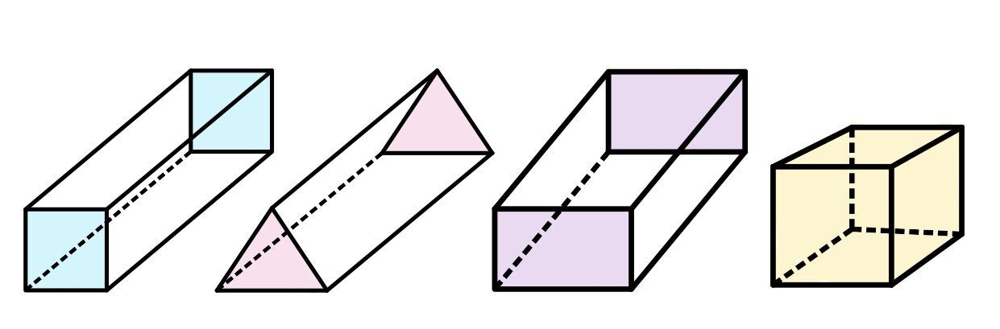
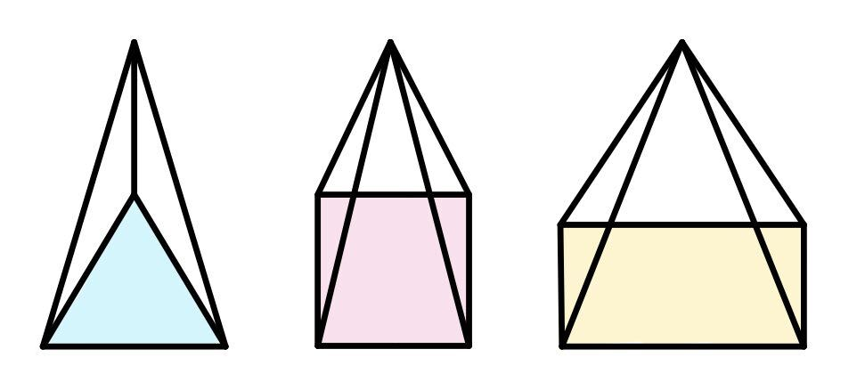

ปริมาตร คือ ปริมาณที่แสดงความจุของรูปเรขาคณิต 3 มิติ โดย ปริมาตร = พื้นที่ฐาน x ความสูง
พื้นที่ผิว คือ พื้นที่ของผิวด้านนอกของรูปทรงเรขาคณิต 3 มิติ โดยหาได้จากสูตรการหาพื้นที่ของรูปเรขคณิต 2 มิติ ที่เป็นรูปประกอบของรูปเรขาคณิต 3 มิตินั้น
ปริซึม คือ รูปเรขาคณิต 3 มิติ ที่มีฐานเป็นรูปเหลี่ยมที่เท่ากันทุกประการ 2 ฐานอยู่บนระนาบที่ขนานกัน และด้านข้างแต่ละด้านเป็นรูปสี่เหลี่ยมด้านขนาน
ทรงกระบอก คือ รูปเรขาคณิต 3 มิติ ที่มีฐานเป็นรูปวงกลม 2 ฐานอยู่บนระนาบที่ขนานกัน
พีระมิด คือ รูปเรขาคณิต 3 มิติ ที่มีฐานเป็นรูปเหลี่ยมใด ๆ 1 ฐาน และมีด้านข้างแต่ละด้านเป็นรูปสามเหลี่ยมที่มีจุดยอดร่วมกันที่ยอดแหลม
กรวย คือ รูปเรขาคณิต 3 มิติ ที่มีฐานรูปวงกลม 1 ฐาน และยอดแหลมที่ไม่อยู่บนระนาบเดียวกับฐาน โดยที่มีเส้นตรงเชื่อมระหว่างจุดยอดและเส้นรอบฐาน
ทรงกลม คือ รูปเรขาคณิต 3 มิติ ที่มีผิวโค้งเรียบ และมีจุดทุกจุดบนผิวโค้งห่างจากจุดศุนย์กลางทรงกลมเป็นระยะทางเท่ากัน